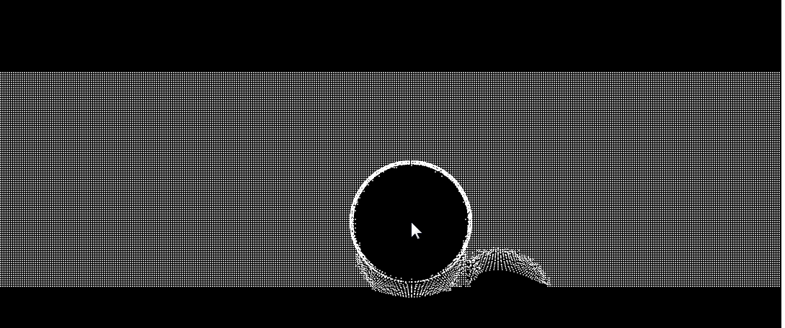
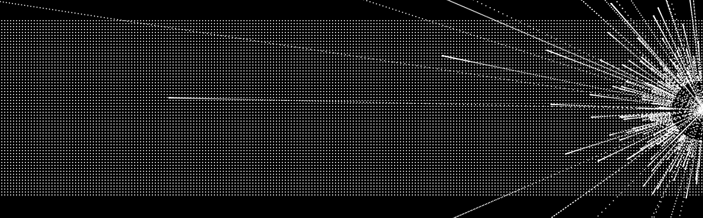
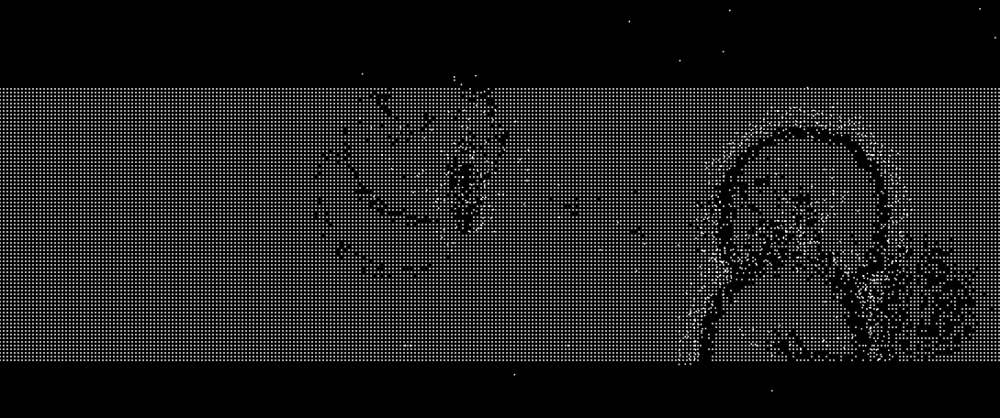
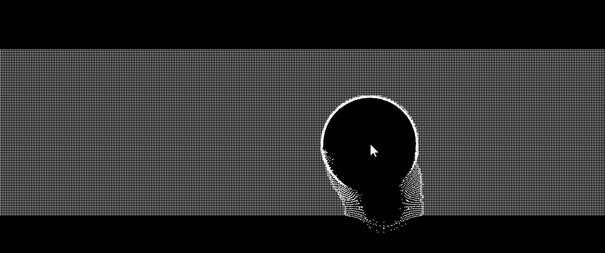
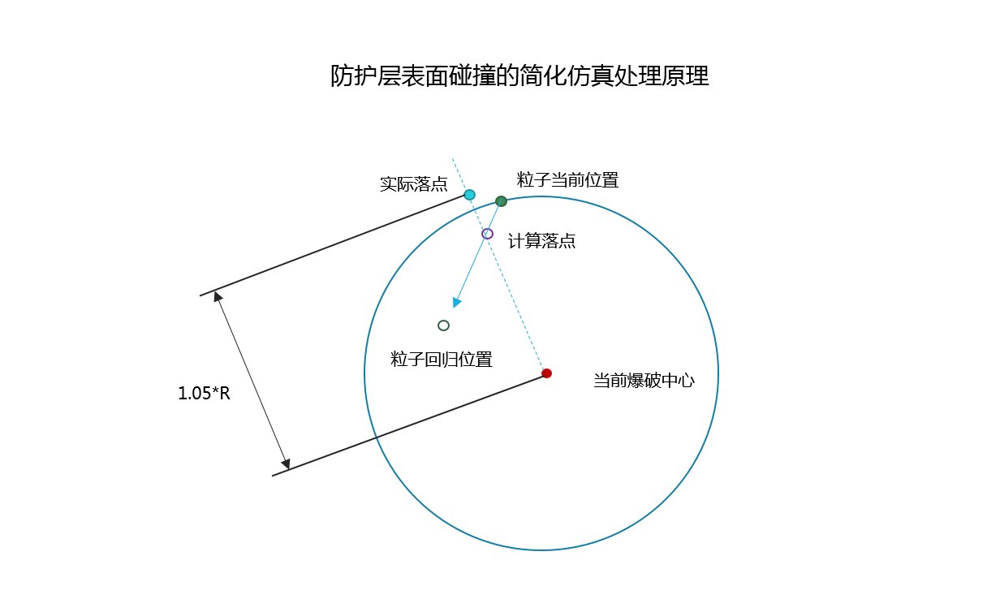

目录
示例代码托管在：http://www.github.com/dashnowords/blogs
博客园地址：《大史住在大前端》原创博文目录
华为云社区地址：【你要的前端打怪升级指南】
粒子特效一般指密集点阵效果，它并不是canvas独有的，这个名词更多出现在AE，cocos2d，Unity相关的教程中，并且提供了方便的编辑插件让使用者可以轻松地做出例如烟火，流星，光晕等等动态变化的效果，看起来非常酷炫。如果你接触过Three.js，会发现三维空间的点阵效果看起来更生动。粒子特效的本质还是一个逐帧动画，所以我们仍然可以使用上一节中提到的动画编程范式来实现它。本节的教程将实现下面这样一个粒子效果：

这是笔者第5个版本，看起来还挺像回事的吧，本篇中我们将逐步实现这样一个酷炫的粒子动画，也邀请你一起来看看开发过程中那些各种令人哭笑不得的问号黑人脸时刻。
想实现上面的动画，我们首先要做的是构建一个静态的粒子点阵，构建的过程并不复杂，无非就是x和y两个方向上以固定间距来画点。如果我们将单个粒子定义为精灵，而不是粒子群，那么按照上一节的开发范式，我们会在逐帧动画的执行函数step中按照如下的方式来更新粒子点阵的状态：
function step(){
...
particles.map(particle=>{
particle.update();
particle.paint();
})
}可画面在粒子点阵动起来后就变得巨卡无比，视觉体验很差。事实上，每一个精灵状态的update( )方法仅仅是一些javascript中的计算代码，执行速度是非常快的，而paint( )方法中会经历路径绘制和渲染这两个阶段才能绘制出粒子，这个过程的高频执行相对来说就会很耗时，当舞台上的元素数量较少时并不会有什么问题，但在粒子点阵这样一个大量精灵元素的场景下，就很容易达到性能饱和。而解决的方式并不复杂，粒子是平铺在画纸上的，绘制的先后次序并不会导致画面覆盖，我们可以先描绘出所有粒子的路径（一个小半径圆圈），接着再最后调用context.stroke()方法一次性将所有粒子的边线绘制出来，卡顿的问题立刻就解决了。就好像SPA框架中先收集变化并对新旧DOM树进行diff操作，然后集中进行DOM更新，以取代独立分散的DOM操作造成的性能损耗。

构建完静态粒子阵列后，我希望从简单的特效还是做起，那就是鼠标移动到某个位置后，就把固定半径内所有的粒子沿径向爆炸开来，粒子将沿鼠标点和初始位置的连线运动。然而效果是上图那样的，虽然看起来还挺酷炫的，但它不是我们期望的效果。这里只是一个低级错误，就是在step( )没有重绘画布，canvas就像一张画纸，你所绘制的一切都保留在上面直到你用底色色块将其覆盖然后重绘，由于基本的视觉暂留，高速的重绘就成了动画。

当我们能够模拟粒子沿爆炸中心炸开的效果后，就需要考虑如何将其复位。起初笔者试图用弹簧模型来模拟粒子行为，但是出现的问题就如同上图那样，有一部分粒子在初始点附近做起了简谐振动，通过设置最小复位距离来强制复位也很难做到，如果值太小，总会出现捕获不到的点，如果值太大，又会造成复位效果失真。其实将复位点作为弹簧模型的平衡点是有问题的，因为简谐振动在过中点的时候虽然不受力，但其速度却达到最大，这就使得逐帧动画之间的位移变化很大，所以才会出现上述的最小复位距离很难确定的问题。
越贴近真实效果，粒子力场模型就会越复杂，如果感兴趣，你可以自行建立力场模型来进行仿真。本章的示例代码中我们采用一种简化的处理方式，就是在爆炸后，直接将粒子置于一个较远的位置，并以一个线性递减的速度来靠近其初始位置，越靠近初始位置速度就越小，当其距离小于最小复位距离时将其归位。
当能够实现炸开的粒子复位后，最后要实现的效果就是防护圈，你可以想象一个透明的球体被扔进水里的效果，水在外围运动却无法穿透防护进入球体。

笔者首次建模后得到效果是上图这样的，使用的模型是一个碰撞衰减模型，也就是将防护层当做钢体表面，当粒子在复位过程中进入防护层后，就将其速度向量进行反向，并乘以衰减系数，当其离开防护层后再重新将速度方向指向初始位置。那么这个模型有什么问题呢？其实上面的动画中已经能够看出，由于时间间隔的选择问题，粒子在两帧之间所移动的距离可能会非常大，导致粒子会突然穿透防护层；另一方面，当爆炸中心移动后，粒子复位时的速度方向和它与爆炸中心的连线可能并不重合，单纯地将速度沿原方向取反显然是失真的。
实际上在防护层边界的处理上，需要对上述模型进行一些调整。我们换个角度思考一下，假如将防护罩展开成一个平面，那么粒子的运动轨迹就变得清晰了，如果爆炸中心没有移动，那么粒子的复位其实就相当于垂直下落的，如果爆炸中心和复位中心不重合，那么总可以将小球的速度分解为沿爆炸中心径向和沿爆炸中心切向，它的运动表现就和具有水平初速度和垂直加速度的物体遇到反弹平面时是一致的，为了简化仿真处理，当小球即将和防护层碰撞时，可以直接将其沿爆炸中心径向的速度清零，只保留切向速度，这样当粒子碰到防护层而无法归位时，就会沿着防护层表面运动，这样粒子就不会穿透防护层了（示例代码中采用了更简化的仿真策略，下文会提及）。
在图形学的计算中，向量的使用频率是极高的，在计算距离或是判断点线面之间的关系等等场景中都会应用到，canvas只是一张画布，其中的关系和距离等等都需要通过手动计算才能获得。如果不对常见的向量操作进行封装，代码中就会充斥着各种诸如用Math.sqrt(A.x * A.x + A.y * A.y)求模运算这种细节完全暴露的代码，不仅书写起来非常繁琐，阅读和理解的困难也很高，所以我们需要建立一个二维向量类，把向量的求模，反向，相加，相减等常见操作挂载在原型链上，这就使得代码本身更具有意义，下面给出一个常见的二维向量类的实现，你可以根据自己的需求对其进行改造，后面的示例中我们也将直接使用这个类:
//二维向量类定义
Vector2 = function(x, y) { this.x = x; this.y = y; };
Vector2.prototype = {
copy: function() { return new Vector2(this.x, this.y); },
length: function() { return Math.sqrt(this.x * this.x + this.y * this.y); },
sqrLength: function() { return this.x * this.x + this.y * this.y; },
normalize: function() { var inv = 1 / this.length(); return new Vector2(this.x * inv, this.y * inv); },
negate: function() { return new Vector2(-this.x, -this.y); },
add: function(v) { return new Vector2(this.x + v.x, this.y + v.y); },
subtract: function(v) { return new Vector2(this.x - v.x, this.y - v.y); },
multiply: function(f) { return new Vector2(this.x * f, this.y * f); },
divide: function(f) { var invf = 1 / f; return new Vector2(this.x * invf, this.y * invf); },
dot: function(v) { return this.x * v.x + this.y * v.y; }
};本节中针对重点代码片段进行讲解，完整的示例代码可以从【我的github仓库】中获取到。
update方法/*方法中涉及到的位置相关属性都是Vector2这个向量类的实例
*所以可以调用原型链方法进行向量计算
*/
update(){
let nextPos;//模拟下一次落点
const disV = this.pos0.subtract(this.pos);//当前位置到回归点的向量
const disL = disV.length();//当前位置和初始点距离
//1.计算速度（设定最小速度避免出现无限接近却无法归位的场景），并模拟下一次落点
this.velocity = disV.multiply(kv * disL < minV ? minV : kv * disL);
nextPos = this.pos.add(this.velocity.multiply(dt));
//2.判断下一次落点是否和当前爆破范围保护层碰撞
const disToE = nextPos.subtract(explodeCenter); //从爆破中心指向下一次落点的向量
const disToEL = disToE.length();
const disVnext = this.pos0.subtract(nextPos);//下一次落点指向回归点的向量
const disLnext = disVnext.length();
if (disToEL < explodeR) {
//2.1 如果下一次落点会落在当前爆炸中心的范围内则处理
nextPos = explodeCenter.add(disToE.normalize().multiply(explodeR * 1.05));
}else{
//2.2 如果下一次落点距离回归点小于最小回收距离则回收
if (disLnext < resetDistance ) {
this.pos = this.pos0;
return;
}
}
//3.确认更新位置
this.pos = nextPos;
}上面的位置更新策略的难点在于2.1中的计算方法，也就是粒子回归途中碰到防护层表面时的处理。为了避开复杂的向量计算，示例代码中对碰撞的处理是直接改变其下一个落点的位置，而不是通过速度和受力来计算其位置，具体的做法是从当前爆炸中心向下一次落点位置连线生成向量，然后强制将当前粒子置于1.05倍半径的地方，如下图所示：

为了节约渲染时的性能消耗，示例中对逐帧动画的模式进行了调整，先统一更新粒子状态，接着绘制所有粒子的路径，最后一次性调用context.fill方法将粒子渲染出来。
//绘制粒子
function paintParticles() {
ctx.fillStyle = 'white';
ctx.beginPath();
for(let i = 0; i < particles.length; i++){
for(let j =0; j <particles[i].length; j++){
//更新粒子状态
particles[i][j].update();
//绘制粒子
ctx.moveTo(particles[i][j].pos.x,particles[i][j].pos.y);
ctx.arc(particles[i][j].pos.x,particles[i][j].pos.y,0.9,0,Math.PI*2,false);
}
}
ctx.fill();
}粒子是否受到爆破中心的影响相对容易判断，我们只需要计算粒子当前位置距离爆破中心的距离是否小于设定的爆破层半径即可，本例中依旧使用直接计算位移的方式来替代基于爆破冲击力的仿真，当爆破发生时将受到影响的粒子直接沿爆破中心与当前位置连线方向移动至大于爆破半径的随即位置。
//爆炸时某个点的影响
function explodePoint(p,center) {
let factor= Math.random() * 10;
let dis = new Vector2(p.pos.x - center.x, p.pos.y - center.y).length();
//核心点炸开
if (dis < 0.3 * explodeR) {
//初始位置
p.pos = explodeCenter.add(new Vector2(p.pos.x - center.x, p.pos.y - center.y).normalize().multiply(explodeR*(1+Math.random()*6)));
} else {
//非核心点炸至半径附近
p.pos = explodeCenter.add(new Vector2(p.pos.x - center.x, p.pos.y - center.y).normalize().multiply(explodeR*(1+Math.random()/10)));
}
}其余的部分都是一些常规的逐帧动画框架代码，实现难度并不大，本文不再赘述。